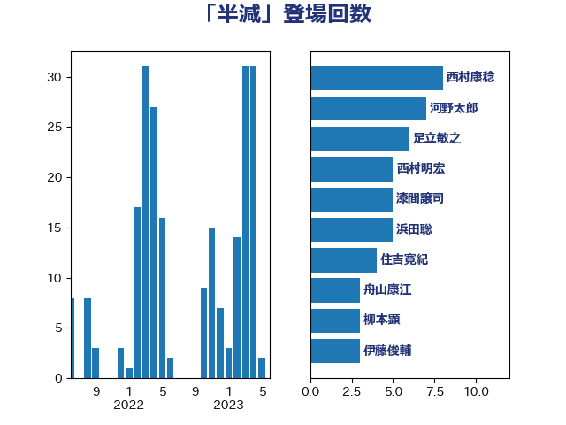

単語「半減」

| 西村康稔 | 自由民主党 | 8 回 |
| 河野太郎 | 自由民主党 | 7 回 |
| 足立敏之 | 自由民主党 | 6 回 |
| 西村明宏 | 自由民主党 | 5 回 |
| 漆間譲司 | 日本維新の会 | 5 回 |
| 浜田聡 | NHK党 | 5 回 |
| 住吉寛紀 | 日本維新の会 | 4 回 |
| 舟山康江 | 国民民主党 | 3 回 |
| 柳本顕 | 自由民主党 | 3 回 |
| 伊藤俊輔 | 立憲民主党 | 3 回 |
| 長友慎治 | 国民民主党 | 2 回 |
| 鎌田さゆり | 立憲民主党 | 2 回 |
| 鈴木俊一 | 自由民主党 | 2 回 |
| 藤巻健太 | 日本維新の会 | 2 回 |
| 落合貴之 | 立憲民主党 | 2 回 |
| 芳賀道也 | 国民民主党 | 2 回 |
| 緑川貴士 | 立憲民主党 | 2 回 |
| 田村智子 | 日本共産党 | 2 回 |
| 浜野喜史 | 国民民主党 | 2 回 |
| 浅野哲 | 国民民主党 | 2 回 |
| 櫻井周 | 立憲民主党 | 2 回 |
| 梅谷守 | 立憲民主党 | 2 回 |
| 斉藤鉄夫 | 公明党 | 2 回 |
| 平木大作 | 公明党 | 2 回 |
| 寺田静 | 無所属 | 2 回 |
| 宮本徹 | 日本共産党 | 2 回 |
| 吉良よし子 | 日本共産党 | 2 回 |
| 伊藤岳 | 日本共産党 | 2 回 |
| 伊藤孝恵 | 国民民主党 | 2 回 |
| 中野英幸 | 自由民主党 | 2 回 |
| ながえ孝子 | 無所属 | 2 回 |
| 高橋千鶴子 | 日本共産党 | 1 回 |
| 高橋光男 | 公明党 | 1 回 |
| 高木真理 | 立憲民主党 | 1 回 |
| 馬場雄基 | 立憲民主党 | 1 回 |
| 馬場伸幸 | 日本維新の会 | 1 回 |
| 須藤元気 | 無所属 | 1 回 |
| 青島健太 | 日本維新の会 | 1 回 |
| 阿部知子 | 立憲民主党 | 1 回 |
| 阿部司 | 日本維新の会 | 1 回 |
| 鈴木義弘 | 国民民主党 | 1 回 |
| 金子恭之 | 自由民主党 | 1 回 |
| 野田佳彦 | 立憲民主党 | 1 回 |
| 野村哲郎 | 自由民主党 | 1 回 |
| 遠藤良太 | 日本維新の会 | 1 回 |
| 逢坂誠二 | 立憲民主党 | 1 回 |
| 赤羽一嘉 | 公明党 | 1 回 |
| 赤澤亮正 | 自由民主党 | 1 回 |
| 西村智奈美 | 立憲民主党 | 1 回 |
| 藤木眞也 | 自由民主党 | 1 回 |
| 菅家一郎 | 自由民主党 | 1 回 |
| 舩後靖彦 | れいわ新選組 | 1 回 |
| 臼井正一 | 自由民主党 | 1 回 |
| 紙智子 | 日本共産党 | 1 回 |
| 篠原豪 | 立憲民主党 | 1 回 |
| 笠井亮 | 日本共産党 | 1 回 |
| 空本誠喜 | 日本維新の会 | 1 回 |
| 稲津久 | 公明党 | 1 回 |
| 秋野公造 | 公明党 | 1 回 |
| 神谷裕 | 立憲民主党 | 1 回 |
| 石橋通宏 | 立憲民主党 | 1 回 |
| 石川香織 | 立憲民主党 | 1 回 |
| 石川博崇 | 公明党 | 1 回 |
| 石井啓一 | 公明党 | 1 回 |
| 田所嘉徳 | 自由民主党 | 1 回 |
| 田名部匡代 | 立憲民主党 | 1 回 |
| 猪瀬直樹 | 日本維新の会 | 1 回 |
| 片山大介 | 日本維新の会 | 1 回 |
| 渡辺創 | 立憲民主党 | 1 回 |
| 沢田良 | 日本維新の会 | 1 回 |
| 永井学 | 自由民主党 | 1 回 |
| 横沢高徳 | 立憲民主党 | 1 回 |
| 柴田巧 | 日本維新の会 | 1 回 |
| 東徹 | 日本維新の会 | 1 回 |
| 末松信介 | 自由民主党 | 1 回 |
| 斎藤アレックス | 国民民主党 | 1 回 |
| 掘井健智 | 日本維新の会 | 1 回 |
| 岬麻紀 | 日本維新の会 | 1 回 |
| 岡本あき子 | 立憲民主党 | 1 回 |
| 山際大志郎 | 自由民主党 | 1 回 |
| 山本啓介 | 自由民主党 | 1 回 |
| 山本博司 | 公明党 | 1 回 |
| 山崎誠 | 立憲民主党 | 1 回 |
| 山崎正恭 | 公明党 | 1 回 |
| 山井和則 | 立憲民主党 | 1 回 |
| 小野田紀美 | 自由民主党 | 1 回 |
| 小里泰弘 | 自由民主党 | 1 回 |
| 小沼巧 | 立憲民主党 | 1 回 |
| 小池晃 | 日本共産党 | 1 回 |
| 寺田学 | 立憲民主党 | 1 回 |
| 宮本岳志 | 日本共産党 | 1 回 |
| 宮崎雅夫 | 自由民主党 | 1 回 |
| 奥下剛光 | 日本維新の会 | 1 回 |
| 太田房江 | 自由民主党 | 1 回 |
| 太栄志 | 立憲民主党 | 1 回 |
| 塩田博昭 | 公明党 | 1 回 |
| 塩村あやか | 立憲民主党 | 1 回 |
| 塩川鉄也 | 日本共産党 | 1 回 |
| 土田慎 | 自由民主党 | 1 回 |
| 古賀友一郎 | 自由民主党 | 1 回 |
| 倉林明子 | 日本共産党 | 1 回 |
| 保岡宏武 | 自由民主党 | 1 回 |
| 伊東信久 | 日本維新の会 | 1 回 |
| 井原巧 | 自由民主党 | 1 回 |
| 井上哲士 | 日本共産党 | 1 回 |
| 中西祐介 | 自由民主党 | 1 回 |
| 中田宏 | 自由民主党 | 1 回 |
| 上月良祐 | 自由民主党 | 1 回 |
| 三浦信祐 | 公明党 | 1 回 |
| おおつき紅葉 | 立憲民主党 | 1 回 |